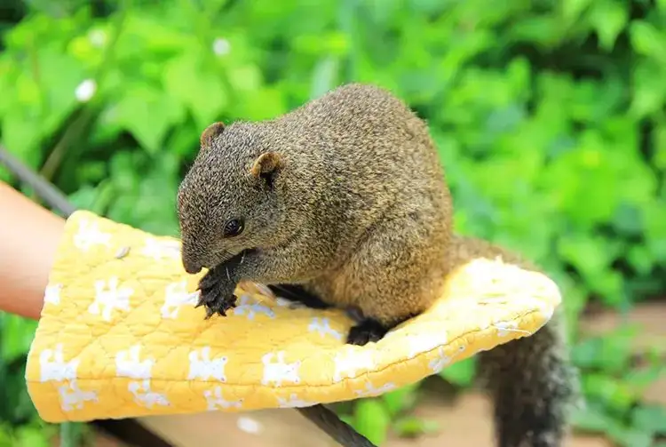

Machida, Tokyo: things to do, food and stays
Machida · Tokyo
Machida
Highlighted on the Tokyo map.

Sights
Dining
Yakiniku Ushinoe Reservation
焼肉 うしの絵

Meat restaurant in Machida, Tokyo.
shin
らぁめん 信

Noodle restaurant in Machida, Tokyo.
Ichiban Ichiban
一番いちばん

Noodle restaurant in Machida, Tokyo.
Shio Ramen Shinka 2nd
しおらーめん進化 2nd

Noodle restaurant in Machida, Tokyo.
Machida Shiruba Shio Ramen Shinka Machida ekimae ten
町田汁場 しおらーめん 進化 町田駅前店

Noodle restaurant in Machida, Tokyo.
Teuchi Chuka Soba Takenosuke
手打ち中華そば 竹の助

Noodle restaurant in Machida, Tokyo.
Ramen Okutsuya
ラーメン 奥津家

Noodle restaurant in Machida, Tokyo.
Ryuseiken
龍聖軒

Noodle restaurant in Machida, Tokyo.
patisserie un cadeau Reservation
パティスリー アンカド

Cafe in Machida, Tokyo.
Kaigara Ya Machida
貝ガラ屋 町田

Noodle restaurant in Machida, Tokyo.
Muroran Ramen Raimon
室蘭ラーメン 雷文

Noodle restaurant in Machida, Tokyo.
Papapapapain
パパパパパイン

Noodle restaurant in Machida, Tokyo.
Rich na Curry no Mise Asano
リッチなカレーの店 アサノ

Japanese restaurant in Machida, Tokyo.
Hokkaido Ramen Oyaji Machida ten
北海道らーめん おやじ 町田店

Noodle restaurant in Machida, Tokyo.
Ramen Machida Ya Machida hon ten
ラーメン 町田家 町田本店

Noodle restaurant in Machida, Tokyo.
Machida Unagi Ryuboku
町田 うなぎ流木

Seafood restaurant in Machida, Tokyo.
The CAFE Machida Reservation
The CAFE 町田

Cafe in Machida, Tokyo.
Rosse
ロッセ

Cafe in Machida, Tokyo.
Allegro con Brio
アレグロ コン ブリオ

European restaurant in Machida, Tokyo.
PAINPATI Guranberii paaku ten
パンパティ グランベリーパーク店

Sweets and bakery shop in Machida, Tokyo.
Chuka Soba Shichimen
中華そば 七面

Noodle restaurant in Machida, Tokyo.
Beans Farm
ビィーンズファーム

Cafe in Machida, Tokyo.
Sushi Yazawa
鮨 やざわ

Seafood restaurant in Machida, Tokyo.
atri

European restaurant in Machida, Tokyo.
Sushi Arai Reservation
鮨あら井

Seafood restaurant in Machida, Tokyo.
Cafe Gray
カフェ・グレ

Cafe in Machida, Tokyo.
Niku no Ittou Reservation
肉の一頭

Meat restaurant in Machida, Tokyo.
Kaho Nakano Ya
菓舗 中野屋

Sweets and bakery shop in Machida, Tokyo.
Pain Pati
パン パティ

Sweets and bakery shop in Machida, Tokyo.
boulangerie chiro

Sweets and bakery shop in Machida, Tokyo.
Shoyo Senchin Manjuuya
小陽生煎饅頭屋

Restaurant in Machida, Tokyo.
44APARTMENT Machida Reservation
44APARTMENT 町田

Cafe in Machida, Tokyo.
44APARTMENT Yakushiike ten Reservation
ダブルフォーアパートメント 薬師池店

Cafe in Machida, Tokyo.
Maison Jibure Guranberii paaku ten
メゾン ジブレー グランベリーパーク店

Sweets and bakery shop in Machida, Tokyo.
STRI Machida
STRI 町田

Cafe in Machida, Tokyo.
Kakijima Ya
柿島屋

Meat restaurant in Machida, Tokyo.
Stay
Rembrandt Hotel Tokyo Machida
レンブラントホテル東京町田

Rembrandt Hotel Tokyo Machida is a hotel in Machida, Tokyo.
Hotel Risoru Machida
ホテルリソル町田

ホテルリソル町田 is a hotel in Machida, Tokyo.
Laxio Inn
ラクシオ・イン

Laxio Inn is an inn in Machida, Tokyo.